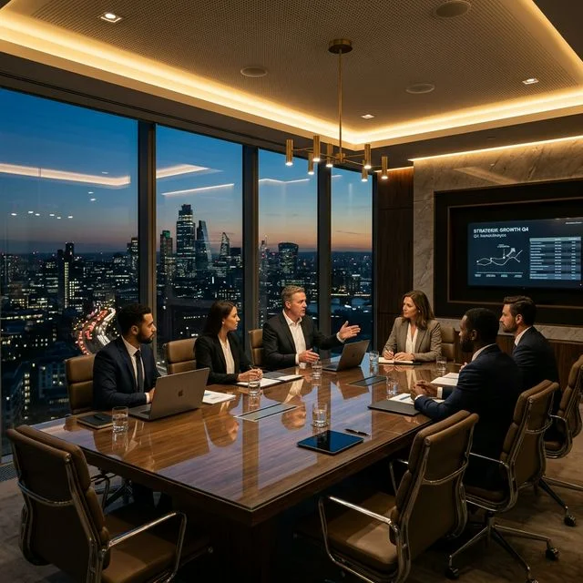
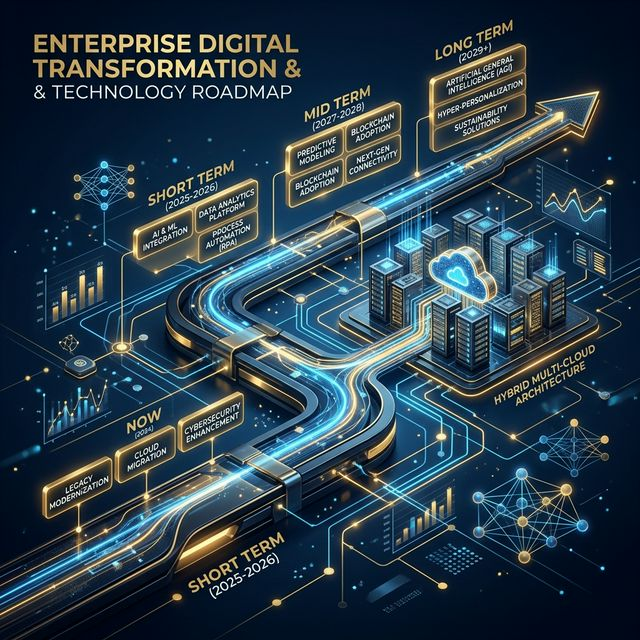

Discover our latest perspectives on strategy, transformation, growth, leadership, and the forces reshaping modern business.
Explore frameworks and perspectives that help organizations identify opportunities, respond to disruption, strengthen competitive advantage, and turn ambition into measurable progress.
How forward-thinking organizations build strategic flexibility, hedge against volatility, and maintain margin resilience during market shifts.
Read ArticleTranslating long-term executive ambition into scalable operational roadmaps that drive predictable revenue expansion and profitability.
Read Article
Business StrategyTactical positioning frameworks for mid-market champions facing aggressive technological disruption, margin erosion, and new entrants.
Read ArticleTransformation is more than adopting new technology. Discover how organizations can redesign operating models, embrace innovation, and create meaningful change at scale.

Digital TransformationOvercoming the 70% failure rate of legacy transformations by aligning culture, transparent metrics, and technology adoption.
Read ArticleEvaluating the tangible return on investment from cloud modernization, automated workflows, and enterprise AI tech stacks.
Read ArticleUnlocking enterprise agility by dismantling operational silos, rigid management mindsets, and accumulating technical debt.
Read ArticleStrong organizations are built around purposeful leadership, aligned teams, and cultures capable of adapting to change.
Executive decision-making principles for guiding teams, maintaining organizational morale, and preserving strategic focus during turbulence.
Read ArticleStructuring cross-functional teams, transparent KPI frameworks, and accountability systems that scale effortlessly across global units.
Read ArticleRedefining executive governance, decentralized autonomy, and adaptive management structures built for modern enterprises.
Read ArticleUnderstand the trends, opportunities, and strategic shifts influencing industries and shaping tomorrow's business environment.
Regulatory compliance, working capital efficiency, risk hedging, and fintech integration strategies.
View Financial ReportsClinical operational efficiency, value-based care models, and digital health ecosystem transformation.
View Healthcare BriefingsSaaS unit economics, cloud security governance, AI integration roadmaps, and M&A execution.
View Tech PerspectivesOmnichannel supply chains, customer lifetime value expansion, and brand portfolio repositioning.
View Retail AnalysisIndustry 4.0 automation, lean supply chain resilience, and global factory throughput optimization.
View Industrial ReportsPractice margin optimization, partner compensation models, and international office expansions.
View Advisory BriefsThought-provoking perspectives for leaders navigating high-impact decisions, organizational change, market disruption, and long-term growth.
Read Executive PerspectivesA comprehensive paper for CEOs and Board Chairs navigating capital reallocation, debt restructuring, and enterprise AI governance.
Download Executive Whitepaper (PDF)Go beyond the numbers. Explore research-driven insights that transform complex market signals and business data into clearer strategic perspectives.
Audit analysis of 450+ global companies revealing key operational variables that separate high-margin growth leaders from laggards.
View Research DashboardQuantitative financial research detailing capital allocation frameworks during high-interest rate macroeconomic cycles.
View Financial ModelReceive curated business insights, strategic perspectives, and emerging trends delivered directly to your inbox.
The right insight can change the way you see a challenge. The right strategy can change what comes next.